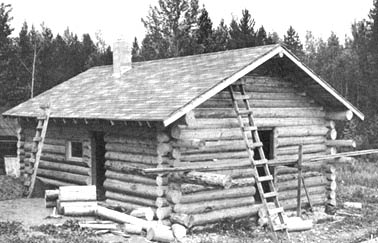

A considerable number of people from the United States and various parts of Canada are coming into the Prince George area of British Columbia. Many are moving onto the land. As B. C. homesteaders of a few years my wife, Karen, and I would like to pass along some of our experience to anyone who is thinking of settling in this region.
Naturally, it's wise to consider all the pros and cons before making a final decision to homestead here. What some people will shudder at the thought of, others may like. For example, although the summers are mild, winters in central B. C. are cold and dry from November through April. That's right: November through April. Snow covers the ground for six months of the year and temperatures sometimes go down to 50 or more degrees below zero. Considerable heating fuel is required during these months and warm clothing is necessary out of doors. The growing season is short and spring thaws make back roads rough traveling.
On the other hand, in the opinion of some-including Karen and myself-winter here is beautiful. There aren't any mosquitoes or black flies around as there sometimes are in spring and early summer. Winter in central British Columbia is a quiet, peaceful season when there isn't much work to be done and large quantities of time can be devoted to hobbies and leisure.
Of course your choice doesn't have to be this narrow. If you want to combine the peace and quiet with a much milder climate, there are many other locations-including the Gulf Islands-farther south in B. C. that may appeal to you. The dry cold of the Prince George area may be a lot more satisfying than you realize, however. At least Karen (who lived in Seattle before moving to Canada) and I (Los Angeles and San Francisco) both like it.
We thought about moving out of the city and living in the woods for many months before Karen and I started looking around the British Columbia interior for a reasonably priced suitable piece of property on which to develop a small subsistence farm. Just any location wouldn't do. We wanted good soil and plenty of fish and game in the area. Water availability was important, as was the reasonably close proximity of a large town (so I could work part time). The Prince George locale-with its many lakes and large moose population-seemed, to us, ideal and we eventually purchased a 100 acre property on Hoodoo Lake Road, 31 miles northwest of the city.
Central British Columbia definitely has one thing in its favor: There is still plenty of inexpensive land available in the region even though the three local pulp mills have been granted thousands of acres under a pulp harvesting lease. Although these leases make it difficult to find any government land available for pre-emption or purchase within a 100-mile radius of Prince George and although much of the remaining acreage is Crown Land not suitable for tree production (if it won't grow trees, it's not suitable for agricultural lease and few back-to-the-landers would want it anyway) . . . government lease, back tax sale and private holdings leave a large choice for your consideration.
The shores of many of the lakes 25 miles and farther north of Prince George are available for 20-year renewable Crown Lease. The main drawback here is the size of the parcels: 100 foot frontage by 300 feet deep. A property must be surveyed-this may cost $200 or more-before a lease is granted and the cost of the lease is then $40.00 a year and $25.00 for annual taxes.
It is also possible to lease up to 5 acres of Crown Land (other than lake frontage) for a homesite. The land so available is not generally considered suitable for agricultural purposes but such tracts are definite homestead possibilities if part of the five acres is arable.
Back tax land may present an even better opportunity. Land is auctioned off for unpaid taxes each October (usually about the 15th of the month) throughout the province. The description, amount owed and date of auction of each tract is always listed in the October 16th issue of the B. C. Gazette. The publication is available for 25 cents the third week in September from Queens Printer, Parliament Buildings, Victoria, B. C. The taxes owing on 160 acres are often $100.00 or less and a lucky bidder may not have to pay much more than that, although bids usually go higher.
The hangup with buying back tax land is the one year waiting period before ownership of the acreage is actually transferred to the successful bidder. The year, of course, gives the previous owner time to pay his taxes plus costs. If he does make payment, the bidder's money is returned and he is still without property. It's a gamble, but if time and the tying up of money is not too important it's probably a worthwhile gamble.
Private purchase is the simplest (and most expensive) way to obtain land in the area. The expense, however, is relative and parcels of 100 or more acres can often be found for as little as $35.00 an acre. Small tracts are correspondingly more expensive but, still, I knew of a 2-acre piece a few months ago-seven miles east of Prince George-covered with trees and with a creek running through the back. The owner was asking only $500.00.
I've come to the conclusion that, whether they know it or not, a huge chunk of land is not necessarily what most of today's homesteaders are looking for. Ten well-chosen acres can usually give you everything you want. One acre is plenty for a homesite and large vegetable garden and a few fruit trees. Three acres can grow more hay than you'll need for a couple of horses and either a goat or cow. The remaining six acres can supply firewood. The only real advantage of a larger spread is assured seclusion if your homesite is located near the center of the property.
A large acreage is certainly impressive but other factors-such as water availability, condition of the soil and drainage are very important in the success of a homestead. I know one young couple from Vancouver that recently purchased 160 badly burned-over acres that won't grow weeds, let alone a vegetable garden, without a lot of work and fertilizer. Surprisingly, they are not as discouraged as they could be . . . but 10 fertile acres would have made them a much better buy.
I've also watched quite a few folks purchase land that is rich, beautiful . . . and over a water table that is so deep it costs a fortune to drill a well. Consequently, they have to haul water from as close a source as possible. By contrast, other homesteads have plenty of water from a dug well only 11 to 25 feet deep. In our case, nearby Hoodoo Lake provided us with water until I could dig a well. Now, the well-20 feet deep-furnishes us with all the water we can use.
It was late in April when we moved onto our property and a few inches of snow still lay on the ground. Luckily, there was a 75-year-old trapper's cabin on the place in the trees overlooking a large meadow only 200 yards from Hoodoo Lake Road. The cabin was little and needed repairs and cleaning to make it liveable but it was a serviceable temporary home and we were happy to have it. We unloaded our belongings, moved in and started building a permanent log cabin.
The construction of our new house was a big job for amateurs and we worked hard finding straight trees, cutting them, skinning bark, notching, fitting and lifting. It was worth it. We were rather pleased with the finished product and I hired a fellow with a D-8 Caterpillar tractor to clear some land for a vegetable garden and driveway. When summer arrived, we took time out to do some fishing and swimming.
Most of the lakes in the area are well stocked with trout and the fish are easy to catch while trolling from a small boat. Spence Lake is a little different and, usually, we catch only squaw fish there. This fish is rather bony but the meat is white and quite tasty. We intend to devote more time to this pastime in the future.
Our first summer near Prince George convinced us that we had picked a good location for our homestead. Except for mosquitoes, the season was very pleasant . . . beautiful, in fact. The spruce, pine, birch, berry vines, ferns, flowers and light green poplar trees with greenish-white trunks grew everywhere. The air was fresh and the days-allowing an occasional rain shower were sunny. The night sky was filled with stars (a sight rarely seen in the big cities from which we had come).
We didn't have any electricity that first year (in fact, we still don't) because the power lines end three miles from our place. This hasn't been any problem at all; we now consider electricity of little importance and I won't bother with a light plant because of the unnecessary expense. We use a mantle-type kerosene lantern for lighting, a transistor radio for outside news and a 12-volt, battery operated television set to receive the one station from Prince George.
After getting in the winter's supply of firewood that first fall, I decided to take a job in town for a few months. The long drive over mostly gaveled roads was hard on our car until after the freeze-up started. Then the roads became packed with snow and were comparatively smooth. I made arrangements with the Highway Department to have our drive opened by the snow plow whenever it was out that way and there were only a few times that I could not get to work that winter.
In the spring I quit my job in Prince George. We were anxious to get our garden planted and build a root cellar and large woodshed. I bought some lumber from a small mill and started construction. The weather was very dry that spring, with clear skies and sunshine almost every day.
A good wood stove and heater plus the plentiful local timber supply adds up to a sure way of beating the otherwise ridiculous cost of heating a building during our cold winters. To do the job right, though, you'll need a woodshed that holds at least four cords of wood.
The roof of a woodshed should be high enough to permit the easy swing of an axe. I made the mistake of building our shed too low and I have to do all necessary chopping outside. This can be a nuisance in nasty weather. Eventually I'll build a higher addition to our shed.
We've found that birch and pine are the best firewood in this area. Either, if cut and split by midsummer, will be dry enough to burn well the following winter. Birch will even burn halfway decently while still green.
A root cellar is one necessity that we homesteaders can't get by without. It keeps all root crops, canned goods and apples from freezing in the winter and from spoiling during the summer. Karen and I built ours by digging a large hole in the side of a small hill. We framed in the hole with a double wall and ceiling of lumber and using black building paper as a vapor barrier. The four-inch, space within the hollow walls and ceiling was filled with sawdust for insulation. The floor of a root cellar is always left na dirt and, in extremely cold weather, you should never open the cellar's door and allow the canned goods and other food to freeze. To prevent this problem, the best root cellars have a vestibule entrance with two doors about six feet apart.
Most root vegetables packed and stored in such a cellar in the late so mmer or fall will keep until the following spring. We've stored potatoes in ours all winter and into the following summer successfully and other vegetables have kept most of the winter.
We wanted a garage but it had to wail for the following summer to be built. As you'll see later, we found that it's next to impossible to get by without a garage up here if you have a car or track. It's bad enough to dig a vehicle out of a snowdrift every time you want to drive into town for supplies . . . it's even more annoying to have to build a fire under the oil pan before the thing will start in 40-below weather. A garage is especially important when there is no electricity (as is the case at our homestead) because a block heater cannot be used.
HOW TO FIGHT BEAVERS AND LOSE
We also wanted to drain our 30-acre meadow that had been dammed by beavers. The first step was to lower the culvert under the road at the end of the meadow and since the Highway Department couldn't get to that for a year-this was another project that had to wait until the following summer. Once the culvert was changed, however, I found that my work had just began.
Every evening I would duke an axe and shovel and dig a big hole in the dam, so the water could drain off the meadow. And every morning the beavers world have the dam solidly rebuilt. I thought that they would eventually gel discouraged and move on to another location but, by fall. the beavers had beaten my best efforts.
Soon after the first snows of urn second winter, I decided to again work in Prince George for awhile. That winter was very cold, much colder than the previous one and the temperature sometimes plunged down to 50 and 60 degrees below zero. There were many days when I couldn't start the car. Often, when the car would start, winter storms still kept me from reaching my job. So. after two months, I quit and took it easy
for the winter. Karen and I filled our days visiting the neighbors and catching up on long put-off reading. And, of course, there was always wood to be chopped.
Even though I was forced to stop my commuting, driving is not particularly hazardous up here during the winter. The snow is dry, when it packs on the roads it only makes then, smoother and the snow plow clears off the excess regularly. The roads do tend to get slippery when temperatures are high enough to melt some of the snow, but this usually occurs only in early spring and late fall.
Strange as it may seem, the mode of transportation that is most limited during the winter is plain old walking. Unless the drifts develop a crust of ice, we often can do little foot travel without snowshoes.
I should mention that I always take down the 303 Enfield ex- army rifle and go moose hunting as soon as the winter freeze begins. We hang the moose carcass outside near the cabin where it stays frozen all winter and cut off what we need. One moose lasts the two of us-and our little cross terrier, Chico-all winter.
There are a few deer in our region and Karen prefers venison-which has more fat-over moose. She says that moose is too dry, but I prefer the moose meat. Chico likes anything.
I killed a black bear once and liked the meat but Karen didn't. We used The fat for cooking for awhile but finally, went back to vegetable oil during one of the cholesterol campaigns.
When the temperature drops very far below zero-which it occasionally does-going to the outhouse can be an unpleasant experience. Still, we struggled along with outdoor plumbing for some time and only recently put in inside fixtures. It makes a big difference and wasn't too expensive to install.
It wasn't a difficult job either, even though we had to pay more attention to details than if we were doing the same job in a more temperate climate. Gravity feed throughout allowed us to use the comparatively inexpensive and easy to handle plastic pipe and I built a septic tank and installed the necessary pipes and fixtures without any previous experience.
Our pressure tank (an old oil drum) is mounted high in a corner of the bathroom and, as I mentioned, from that point on the system operates by gravity feed. We fill the 55 gallon (45 Imperial gallons) oil drum; with a gasoline engine-driven pump mounted directly below it. The engine fumes exhaust outside through a flexible pipe run through the wall.
The plastic pipe from the well to the pressure tank had to be buried three feet deep to prevent freezing during the winter. Also, the ground over the pipe can't be walked on in the winter or the ice will be driven down and-again-the pipe will freeze. So I built a small bridge or walkway where our path crosses the underground pipe. Otherwise, the plastic pipe would not have been completely safe from freezing unless it were buried nine feet deep.
Many people from more southern areas are surprised to find that most vegetables flourish in this region even though there are only about 80 frost-free days during the growing season. We grow carrots, turnips, potatoes, radishes, lettuce and onions with great success although the summer is not long enough for tomatoes or corn. Various types of apple and pear trees do fine here if protected from the winter cold. We learned the value of this protection the hard way with our first two apple trees and we intend to take better care of our future orchard. Another tree that does well here is the Filazel. This is a cross between the filbert and the hazel nut, developed by J. V. Gallatly, and it withstands temperatures of 60 degrees below zero.
Our first garden did not live up to expectations but it was our initial attempt at "growing our own" and we learned a lot. One of the things we learned about was soil analysis. The B. C. Department of Agriculture's soil testing laboratory will analyze four samples for $3.00. The test takes about ten days and our report showed that our garden was very deficient in potash. Cow manure is strong in potash so we rebuilt the garden with plenty of cow manure and a 50 pound bag of muriate of potash. On a second try, in spite of a late June frost, our garden was successful enough to fill our root cellar with enough vegetables to last well over the winter. Karen also canned some wild berries for us.
The population of Prince George is increasing rapidly. In 1966, 18,000 people lived in the town; now there are 35,000. The town probably won't continue this growth rate, however, because-after all-it is pretty far north.
Employment opportunities in the area are better than in some other parts of British Columbia. The pulp mills (all three of them) are operating and hire workers from time to time. Jobs are also available in the woods and lumber mills. Wages in these and all the support industries of such a region are good and equal to Vancouver's. When I worked in the winters (as an auto mechanic) I earned $4.15 an hour as compared to Vancouver's $4.35. The standard work week is 40 hours and I found that about half of the auto dealerships are unionized. If you want something less structured, there is an occasional opportunity for trappers and hunting guides.
Gasoline costs from 48 cents to 52 cents for an Imperial gallon (larger than the U. S. gallon) of regular. Food and clothing prices are comparable to other, larger cities. Rough lumber for building can be purchased from small mills at a very reasonable price ranging from $20.00 to $50.00 per 1,000 board feet, depending on the size of the pieces
Karen feels that a horse is a must. She has me talked into the idea now and I might even get two. We will have to feed them over the winter but on our property we have a large meadow of wild hay that horses can graze for about six months of the year. If we plant some of our cleared land in clover and have it baled in the fall, we'll have horse feed at little cost.
We've found that, after once getting our homestead set up the way we wanted it, living in the bush is quite nice. It costs very little money to both live and eat well whereas, when we lived in the city, I had to work at least ten months of the year.
I cringe to think of it.
|
 Our car on the road to Hoodoo Lake during the winter. See, its not really so bad. |
An early autumn snow on our woodshed. Fuel up here is free for the cutting and we make good use of it. |
Our wood stove and heater. |
|
The Bumpus Homestead garage as it neared completion. |
A small gasoline engine-driven pump draws water from our well and forces it. . . |
Directly overhead to a storage lank in the corner of the bathroom. Gravity feed then takes over to operate our inside plumbing. |
|
|
|
|